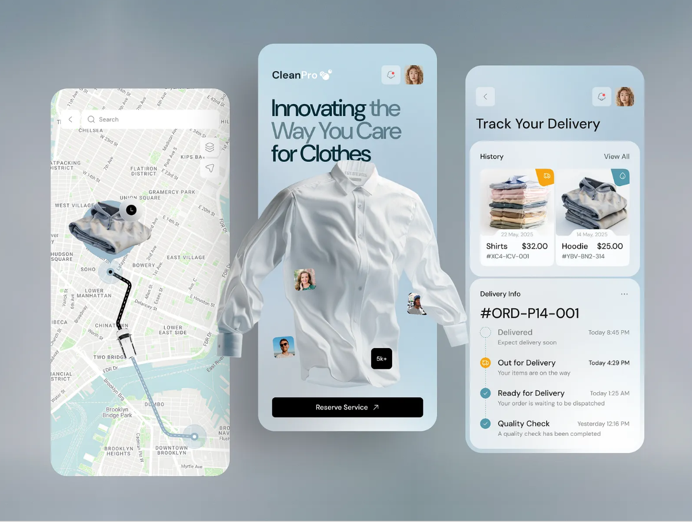

Laundry Operations Platform
End-to-end scheduling, fulfillment tracking, and payments for on-demand laundry services
Case study
Consumer mobile + web console for pickup, processing, and delivery
A full-stack service platform for laundry operators and their customers: book pickups with clear service lines (wash, dry-clean, press), pay through a gateway integration, and follow orders through a defined fulfillment lifecycle. Operations staff use an admin surface to manage volume, assignments, and status—so the product is accountable end-to-end, not only a booking form.

Overview
The platform separates customer intent (when, where, which services), field execution (pickup and delivery routes, handoffs), and back-office control (queues, assignments, financial reconciliation). Mobile and web clients share the same domain model: orders advance through explicit states, media for items or receipts is served through a CDN-backed asset pipeline, and payments sit behind gateway flows rather than ad-hoc transfers.
Problem
Customer side
- Opaque status once garments leave the home
- Friction coordinating pickup windows and addresses
- Weak trust signals around pricing, add-ons, and service type
Operator side
- Orders, staff, and vehicles tracked in disconnected channels
- Hard to prioritize SLAs and peak-day throughput
- Manual payment follow-up and dispute risk
Solution
A unified product: customers schedule pickups, select service tiers (wash, dry-clean, press / iron), and pay securely; the system surfaces live status from request through facility processing to return delivery. Administrators manage the catalog of services, assign runners or partners, and monitor pipeline health—structured so the same order record drives customer UI, notifications, and internal dashboards.
Product capabilities
Scheduling and service configuration
Address capture, pickup windows, and line-item service selection reduce ambiguity before a job enters the queue. The model supports repeatable patterns operators expect (standard wash vs delicate / dry-clean routes) without overloading a single generic SKU.
Order lifecycle and visibility
Customers see progression across pickup, intake, processing, and delivery. Staff update authoritative state so mobile clients reflect the same source of truth—minimizing “where is my bag?” support load.
Requested → Scheduled pickup → Collected
→ In facility (wash / dry-clean / press)
→ Ready → Out for delivery → Delivered / Closed
Payments
Integrated payment gateway for checkout and settlement; server-side validation of amounts and order linkage before fulfillment proceeds.
Notifications and engagement
Push and messaging channels (including WhatsApp-style updates where integrated) for milestone events—pickup dispatched, delay, ready for delivery—so users are not polling the app.
Location and logistics
Location-aware flows support pickup and delivery optimization and ETA-style communication between customer and field roles.
Media and performance
Receipt or garment imagery and marketing assets are stored and delivered via Cloudinary (transforms and CDN), keeping list and detail views fast on variable networks.
System design
- Roles: Customer, admin / operations—with clear permission boundaries on mutations.
- API-first backend: Express on Node.js; document-oriented persistence in MongoDB for flexible order payloads and audit-friendly append patterns.
- Client split: React Native for mobile field and consumer scenarios; Next.js for web (marketing, account, or operator console) sharing types and API contracts where practical.
- Evolution path: Modular services and clear domain boundaries to introduce async workers (e.g. messaging with RabbitMQ or Kafka) without rewriting core flows.
Technology
- Clients
- React Native (mobile), Next.js (web), TypeScript where adopted for safer contracts.
- Backend
- Node.js, Express.js, REST APIs, JWT or session-based auth patterns as required by deployment.
- Data
- MongoDB for orders, users, and service configuration; indexing for status and date-range queries.
- Assets
- Cloudinary for uploads, transformations, and CDN delivery.
Integrations: Push (e.g. Firebase), WhatsApp Business messaging, or message-bus backends can attach to the same event hooks as the product matures—without changing the core order state machine.
Outcomes
For customers
- Single place to book, pay, and track
- Clear expectations on service type and timing
- Proactive updates instead of reactive support
For operators
- Operational dashboard over live pipeline
- Assignable work and auditable status transitions
- Foundation for SLA reporting and capacity planning
Roadmap
- Deeper route optimization and batching for field staff
- Subscription or recurring pickup plans
- Automated retry and escalation policies for failed pickups
- Analytics exports and partner / franchise multi-tenant mode
Engineering learnings
Service marketplaces fail on edge cases: partial pickups, address changes, and payment mismatches. Designing explicit states, idempotent payment hooks, and admin overrides early avoided painting the team into a corner. Treating mobile and web as consumers of the same API contract reduced drift and duplicated business rules.
Summary
Laundry Operations Platform is a practical vertical SaaS slice: scheduling, payments, fulfillment visibility, and operator tooling in one coherent system— built for reliability and scale-up toward event-driven and multi-channel notifications as traffic grows.
Let's Build Together
Whether you're running a service business or launching a tech startup, I bring full-stack expertise to create scalable, secure, and high-performance web apps. Let’s turn your ideas into digital success stories from concept to deployment.
Get In Touch